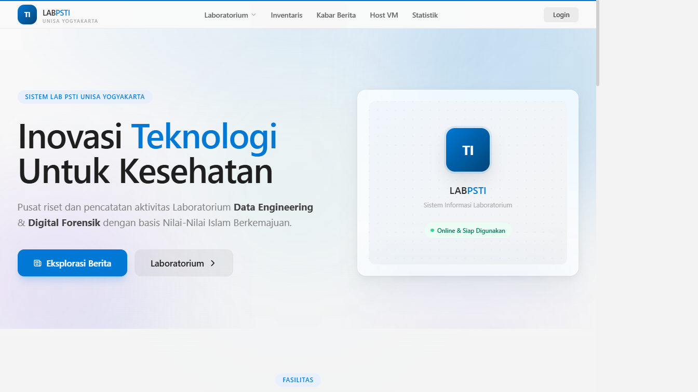

Portfolio
Koleksi Proyek Unggulan
Implementasi infrastruktur jaringan, modul server Linux, dan platform digital terintegrasi.
IMM Korkom UNISA
Platform resmi pertukaran informasi & komunikasi Ikatan Mahasiswa Muhammadiyah Korkom UNISA, automasi alur data, berita, dan administrasi organisasi.

Sistem Lab PSTI UNISA
Sistem presensi laboratorium jaringan PSTI UNISA berbasis web dengan validasi subnet IP lokal dan pemeriksaan gateway untuk absensi mahasiswa yang terverifikasi dan akurat.

Tugas-SLV (Server Linux)
Koleksi skrip otomatisasi konfigurasi server Linux, orkestrasi container Docker, dan dokumentasi provisioning virtual machine untuk lingkungan server.

WireGuard VPN Gateway
Implementasi terowongan VPN WireGuard performa tinggi dengan enkripsi modern ChaCha20-Poly1305 untuk interkoneksi aman antar jaringan kampus dan remote site.

Proxmox HA Cluster
Penyusunan klaster virtualisasi multi-node dengan zero-downtime live migration, sinkronisasi storage ZFS/NFS, dan pemantauan resource server terintegrasi.

Reverse Proxy Layer
Gerbang proxy terpusat dengan automated Let's Encrypt certificate renewal, HTTP/2 multiplexing, rate-limiting, dan proteksi header keamanan OWASP.